This chapter discusses basic Bayesian model fitting with grid and quadratic approximations. The title, “geocentric models,” refers to models that make good predictions, but do not provide causal information about a question. One of these examples is linear regression. This chapter gives examples of basic bayesian linear regression and includes details such as prior predictive checks and how to fit curves with polynomials and b-splines.
4.1 Chapter notes
Normal distributions arise from sums of random fluctuations. Lognormal distributions arise from products of random fluctuations. This property explains why normal distributions are so good at modeling real world data (ontological justification).
Normal distributions can also be justified by the principle of maximum entropy – if all we are willing to specify about a distribution is its mean and variance, then the normal distribution contains the least amount of information (epistemological justification).
Index coding (as opposed to dummy coding or similar methods) makes specification of priors for categorical variables easier.
The prior predictive simulation, drawing samples from the distribution implied by the priors, is essential for ensuring that our priors are reasonable. Note that we should not compare the prior predictive simulation to the observed data, only to our preexisting knowledge of constraints on the model.
Many models which are written in the “plus epsilon” form (see pg 81) (typical for linear models) can be rewritten in this more general framework, which will be easier for non-Gaussian models.
Quadratic approximation, estimating the peak of the posterior distribution with a multivariate normal distribution, is easier than grid approximation and works well when the posterior is approximately Gaussian (many simple examples are). The peak of the quadratic approximate posterior is the maximum a posteriori estimate.
Recall that even though grid and quadratic approximate posteriors provide an actual estimate of the posterior distribution, we can (and should) still sample from the posterior. This mimics the process for inference on more complicated models that must be fit with MCMC algorithms.
A linear model fits the mean, \(\mu\), of an outcome as a linear function of the predictor variable(s) and some parameters. These models are often geocentric – they provide good answers, but often say nothing about causality.
Plotting simulations of the posterior distribution can provide a lot of information about the posterior (see pg 99), often much more than tables of calculations alone.
These types of Bayesian models incorporate two different types of uncertainty – uncertainty in parameter values, which is based on the plausibility of parameter values after seeing the data, and uncertainty from sampling processes.
We can extend linear models to fit curved patterns in datas in several ways, but two of the easiest are polynomials and b-splines. Priors can be difficult to fit to both, as these models are also geocentric. They can accurately fit curves, but do not describe the mechanism or process that generates curved data in the first place. See pg. 119 for an example of fitting a b-spline model using rethinking. One further extension is the generalized additive model (GAM) which incorporates smoothing over continuous predictor variables.
4.2 Exercises
The first few questions are about the following model. \[\begin{align*}
y_i &\sim \mathrm{Normal}(\mu, \sigma) \\
\mu &\sim \mathrm{Normal}(0, 10) \\
\sigma &\sim \mathrm{Exponential}(1)
\end{align*}\]
4.2.1 4E1
In the model shown, the line \(y_i \sim \mathrm{Normal}(\mu, \sigma)\) is the likelihood.
4.2.2 4E2
The model contains two parameters (\(\mu\) and \(\sigma\)).
4.2.3 4E3
To use Bayes’ theorem to calculate the posterior, we would write \[
\frac{\prod_{i} \mathrm{Normal}(y_i \mid \mu, \sigma) \times \mathrm{Normal}(\mu \mid 0, 10) \times \mathrm{Exponential}(\sigma \mid 1)}{\int\int \prod_{i} \mathrm{Normal}(y_i \mid \mu, \sigma) \times \mathrm{Normal}(\mu \mid 0, 10) \times \mathrm{Exponential}(\sigma \mid 1) \ \mathrm{d}\mu \ \mathrm{d}\sigma}.
\]
4.2.4 4E4
In the model shown below, the linear model is the line \(\mu_i = \alpha + \beta x_i\). \[\begin{align*}
y_i &\sim \mathrm{Normal}(\mu, \sigma) \\
\mu_i &= \alpha + \beta x_i \\
\alpha &\sim \mathrm{Normal}(0, 10) \\
\beta &\sim \mathrm{Normal}(0, 1) \\
\sigma &\sim \mathrm{Exponential}(2)
\end{align*}\]
4.2.5 4E5
There are three parameters in the posterior distribution of the model shown (\(\alpha\), \(\beta\), and \(\sigma\)) – \(\mu\) is no longer a parameter of the model since it is calculated deterministically.
4.2.6 4M1
For the model definition below, simulate observed \(y\) values from the prior. \[\begin{align*}
y_i &\sim \mathrm{Normal}(\mu, \sigma) \\
\mu &\sim \mathrm{Normal}(0, 10) \\
\sigma &\sim \mathrm{Exponential}(1)
\end{align*}\]
# Do the simulationmu <-rnorm(1000, mean =0, sd =10)sigma <-rexp(1000, rate =1)y <-rnorm(1000, mu, sigma)# Plot the resultslayout(matrix(c(1, 2, 3), ncol =3))hist(y, breaks ="FD", main ="y")hist(mu, breaks ="FD", main ="mu")hist(sigma, breaks ="FD", main ="sigma")
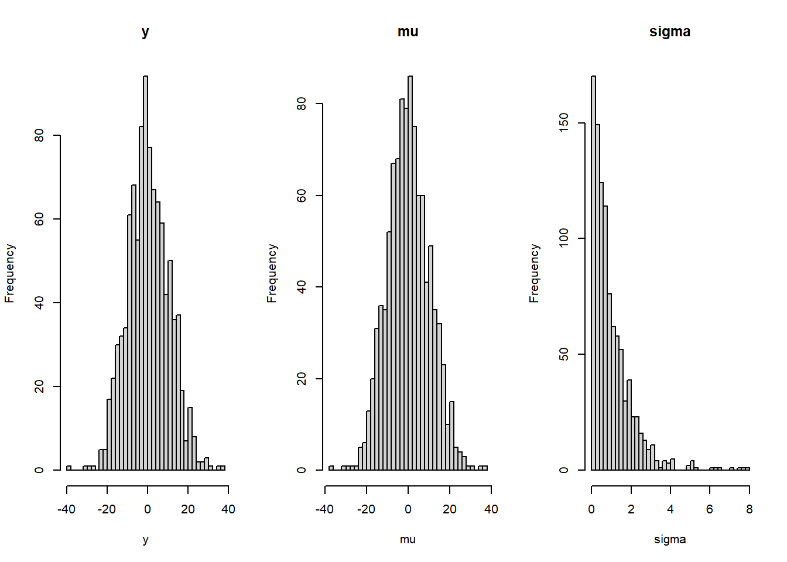
4.2.7 4M2
Translate the model into a quap formula.
y ~dnorm(mu, sigma),mu ~dnorm(0, 10),sigma ~dexp(1)
4.2.8 4M3
Translate the quap model formula below into a mathematical model definition.
y ~dnorm(mu, sigma),mu <- a + b * x,a ~dnorm(0, 10),b ~dunif(0, 1),sigma ~dexp(1)
\[\begin{align*}
y_i &\sim \mathrm{Normal}(\mu_i, \sigma) \\
\mu_i &= a + b * x_i \\
a &\sim \mathrm{Normal}(0, 10) \\
b &\sim \mathrm{Uniform}(0, 1) \\
\sigma &\sim \mathrm{Exponential}(1)
\end{align*}\]
4.2.9 4M4
A sample of students is measured for height each year for 3 years. After the third year, you want to fit a linear regression predicting height using year as a predictor. Write down the mathematical model, defending any priors you choose.
To create the priors, I assumed that height was measured in centimeters. If it is not, transforming either the data or the prior coefficients is a simple linear transformation. The prior for the intercept is centered at a relatively small height (around four feet) with a large spread to allow for differences in biological sex or age distributions in the population, since these were not specified in the question. I subtracted the minimum year in the model so that the years would be scaled as 0, 1, 2, 3, instead of the actual numeric value of the year.
In general, we know that height increases over time, so I used a lognormal prior for the slope to enforce a positivity constraint. The prior has a location parameter of 0, allowing for the chance of no growth over the three years, but a wide spread was chosen by experimenting until the prior predictive simulation represented a wide range of possible trajectories with very few trajectories appearing to be biologically unreasonable. Again, the value was chosen by experimenting with prior predictive simulations until the result appeared to capture a large variety of biologically meaningful trajectories.
I assigned an exponential prior to sigma to reflect the fact that all variances are positive, and most tend to be small-ish, but can be large. I had a difficult time with this one in particular because this model structure seems to imply that people can shrink in-between years. This would be possible with measurement error, but I think it would be quite difficult to have measurement error this severe in something like height, which is easy to measure. However, in order to include a constraint that height can only increase, I think we would need to change the likelihood in the model, which we haven’t discussed yet in the book, so I didn’t want to worry about that. (For example, we could make height lognormally distributed, so random fluctuations would only increase height, as opposed to the current model where random fluctuations can decrease height.)
set.seed(100)# Prior predictive simulationa <-rnorm(1000, 120, 30)b <-rlnorm(1000, 0, 1.5)# PPS for mu -- only needs a and blayout(matrix(c(1, 2), nrow =1))plot(NULL,xlim =c(-0.05, 3.05),ylim =c(-100, 400),xlab =c("year"),ylab =c("height"),main ="prior predictive simulation of mu")abline(h =0, lty =2, lwd =0.5)abline(h =272, lty =2, lwd =0.5)for (i in1:1000) {curve(a[i] + b[i] * x, from =0, to =3, add =TRUE,col = rethinking::col.alpha("black", 0.1))}# PPS for y -- for each a, b, simulate variance around the sampled mu.plot(NULL,xlim =c(-0.05, 3.05),ylim =c(-100, 400),xlab =c("year"),ylab =c("height"),main ="prior predictive simulation of y")abline(h =0, lty =2, lwd =0.5)abline(h =272, lty =2, lwd =0.5)sigma <-rexp(1000, 1/5)for (i in1:1000) {lines(x =0:3, y =rnorm(4, a[i] + b[i] *0:3, sigma[i]),col = rethinking::col.alpha("black", 0.1))}
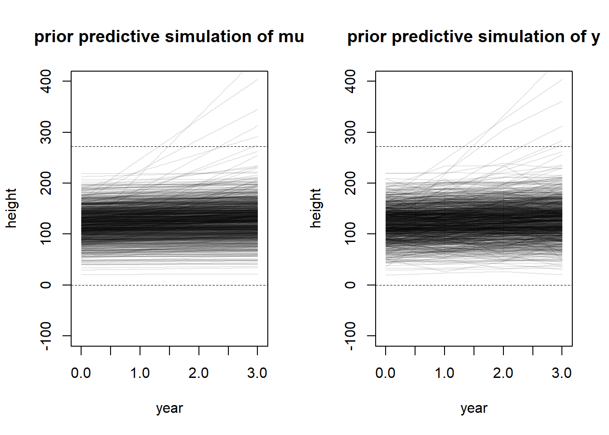
4.2.10 4M5
If I were reminded that every student got taller each year, this would not really change my choice of priors, but it does make me consider the same issues. I already accounted for this in the prior for \(\beta\). However, it does make me think more about the likelihood I used – I really dislike that this likelihood allows for fluctuations that show up like this. Height is not measured perfectly, but large variations are uncommon. So perhaps it makes more sense to have quite a small variance parameter (\(\sigma\)). Or perhaps we could structure the model so that each student has a common variance parameter that does not change every year. We could also consider making the effect of \(\beta\) stronger, so that there is an assumed growth effect and not growing each year is more rare. So perhaps we could consider the following adjusted priors.
set.seed(100)# Prior predictive simulationa <-rnorm(1000, 120, 30)b <-rlnorm(1000, 2, 0.5)# PPS for mu -- only needs a and blayout(matrix(c(1, 2), nrow =1))plot(NULL,xlim =c(-0.05, 3.05),ylim =c(-100, 400),xlab =c("year"),ylab =c("height"),main ="prior predictive simulation of mu")abline(h =0, lty =2, lwd =0.5)abline(h =272, lty =2, lwd =0.5)for (i in1:1000) {curve(a[i] + b[i] * x, from =0, to =3, add =TRUE,col = rethinking::col.alpha("black", 0.1))}# PPS for y -- for each a, b, simulate variance around the sampled mu.plot(NULL,xlim =c(-0.05, 3.05),ylim =c(-100, 400),xlab =c("year"),ylab =c("height"),main ="prior predictive simulation of y")abline(h =0, lty =2, lwd =0.5)abline(h =272, lty =2, lwd =0.5)sigma <-rexp(1000, 1)for (i in1:1000) {lines(x =0:3, y =rnorm(4, a[i] + b[i] *0:3, sigma[i]),col = rethinking::col.alpha("black", 0.1))}
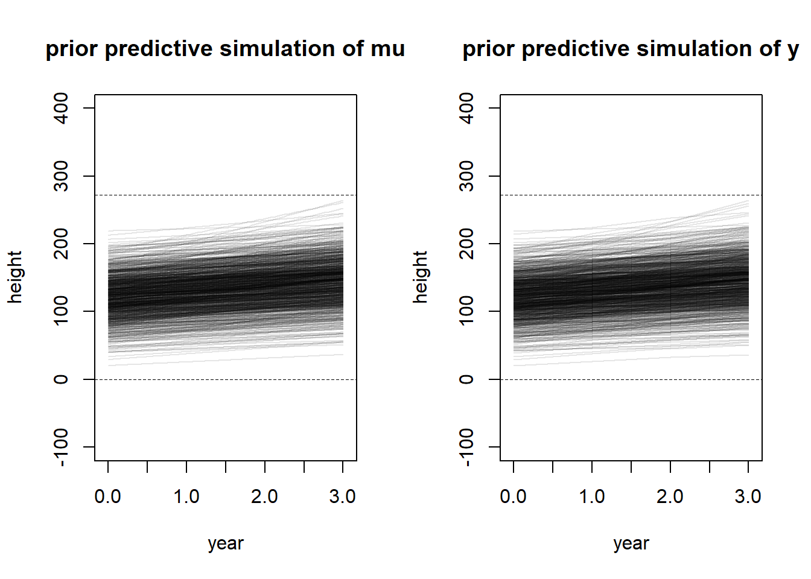
These priors still represent a wide range of biologically accurate values, but there is much less internal (within-subject) fluctuation in height between years, and on average, the slope is steeper.
4.2.11 4M6
If I had the information that variance among heights for students of the same age is never more than 64cm, this would change my choice of variance prior (assuming that this is a priori information and not measured from our sample). If this were measured from the sample, I would not change my priors. But we could consider changing the prior for \(\sigma\) like so. Using the empirical rule for normal distributions, I reasoned that 21 is a reasonable constraint for an upper bound on a Uniform prior for sigma – the resultant likelihood will have approximately 99% of observations within \(3 \times 21 = 63\) cm of the mean.
set.seed(100)# Prior predictive simulationa <-rnorm(1000, 120, 30)b <-rlnorm(1000, 2, 0.5)# PPS for mu -- only needs a and blayout(matrix(c(1, 2), nrow =1))plot(NULL,xlim =c(-0.05, 3.05),ylim =c(-100, 400),xlab =c("year"),ylab =c("height"),main ="prior predictive simulation of mu")abline(h =0, lty =2, lwd =0.5)abline(h =272, lty =2, lwd =0.5)for (i in1:1000) {curve(a[i] + b[i] * x, from =0, to =3, add =TRUE,col = rethinking::col.alpha("black", 0.1))}# PPS for y -- for each a, b, simulate variance around the sampled mu.plot(NULL,xlim =c(-0.05, 3.05),ylim =c(-100, 400),xlab =c("year"),ylab =c("height"),main ="prior predictive simulation of y")abline(h =0, lty =2, lwd =0.5)abline(h =272, lty =2, lwd =0.5)sigma <-runif(1000, 0, 21)for (i in1:1000) {lines(x =0:3, y =rnorm(4, a[i] + b[i] *0:3, sigma[i]),col = rethinking::col.alpha("black", 0.1))}
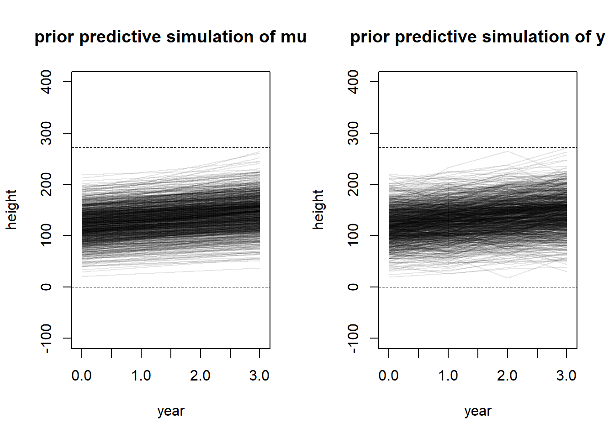
This variance is quite large, which I think intensifies the problem I was previously discussing. Since we consider each annual measurement to be independent, without any “clustering” (we haven’t used that word yet so I don’t want to use it wrong) by inviduals, following this model to the letter allows for wide fluctuations within the predicted trajectory – to me it just doesn’t make sense for the simulated trajectory to be lower in year \(N + 1\) than in year \(N\).
4.2.12 4M7
Refit model m4.3 but omit the mean weight xbar. Compare the new model’s posterior to that or the original model, then compare the posterior predictions.
set.seed(100)library(rethinking)
Loading required package: rstan
Loading required package: StanHeaders
Loading required package: ggplot2
rstan (Version 2.21.5, GitRev: 2e1f913d3ca3)
For execution on a local, multicore CPU with excess RAM we recommend calling
options(mc.cores = parallel::detectCores()).
To avoid recompilation of unchanged Stan programs, we recommend calling
rstan_options(auto_write = TRUE)
Do not specify '-march=native' in 'LOCAL_CPPFLAGS' or a Makevars file
Loading required package: cmdstanr
This is cmdstanr version 0.5.3
- CmdStanR documentation and vignettes: mc-stan.org/cmdstanr
A newer version of CmdStan is available. See ?install_cmdstan() to install it.
To disable this check set option or environment variable CMDSTANR_NO_VER_CHECK=TRUE.
Loading required package: parallel
rethinking (Version 2.21)
Attaching package: 'rethinking'
The following object is masked from 'package:rstan':
stan
The following object is masked from 'package:stats':
rstudent
data(Howell1)d <- Howell1d2 <- d[d$age >=18, ]m_4m7 <-quap(flist =alist( height ~dnorm(mu, sigma), mu <- a + b * weight, a ~dnorm(178, 20), b ~dlnorm(0, 1), sigma ~dunif(0, 50) ),data = d2 )
First we’ll look at the posterior summary.
precis(m_4m7)
mean sd 5.5% 94.5%
a 114.5302928 1.89715027 111.4982802 117.5623053
b 0.8908259 0.04174484 0.8241096 0.9575422
sigma 5.0711281 0.19109884 4.7657152 5.3765409
The intercept estimate is quite different – the previous model reported the following statistics for a: mean 154.6, sd 0.27, 5.5% 154.17, 94.5% 155.05. So our parameter is much smaller with a larger variance. However, the estimates for b and sigma are almost exactly the same as the estimates given for the previous model (see book pg 99). In particular, we should look at the covariance matrix according to the question.
vcov(m_4m7) |>round(digits =3)
a b sigma
a 3.599 -0.078 0.009
b -0.078 0.002 0.000
sigma 0.009 0.000 0.037
The variance for a is much higher, while the variance for b and sigma is exactly the same as the book reports. However, there is now some covariance between a and b, and between a and sigma (but not between b and sigma). Next I’ll plot a sample of prior predictions. Since the uncertainty is so narrow, I decided to only plot 100 posterior samples. The red line shows the maximum a posteriori estimate.
post <-extract.samples(m_4m7, n =100)layout(1)plot(x = d2$weight, y = d2$height,xlim =range(d2$weight),ylim =range(d2$height),col = rangi2,xlab ="weight", ylab ="height")mtext("Sampled posterior predictions")# Plot the linesfor (i in1:length(post$a)) {curve(post$a[i] + post$b[i] * x,col =col.alpha("black", 0.1),add =TRUE)}abline(a =mean(post$a),b =mean(post$b),col ="red",lty =2)
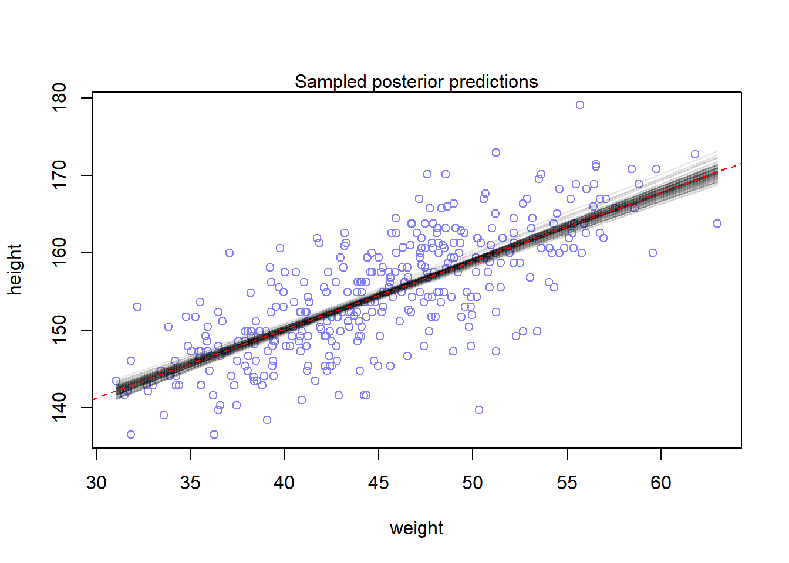
The posterior predictions look about the same to me. So I guess that even when we use different parametrizations (thus changing the interpretation and scale of our alpha parameter), the predictions still work out to be about the same. I think this is foreshadowing MCMC convergence diagnostics with different parametrizations in the future.
4.2.13 4M8
Refit the cherry blossom spline and experiment with changing the number of knots and the width of the prior on the weights. What do you think the combination of these controls?
First we’ll just refit the example.
# Data importdata("cherry_blossoms")d <- cherry_blossomsd2 <- d[complete.cases(d$doy), ]set.seed(100)# Create the splitsnk <-15knot_list <-quantile(d2$year, probs =seq(0, 1, length.out = nk))B <- splines::bs(x = d2$year,# I think we are recreating the default knots and could set# df = 13 instead, but nonetheless we persistknots = knot_list[-c(1, nk)],degree =3,intercept =TRUE )# Fit the modelm1 <-quap(flist =alist( D ~dnorm(mu, sigma), mu <- a + B %*% w, a ~dnorm(100, 10), w ~dnorm(0, 10), sigma ~dexp(1) ),data =list(D = d2$doy, B = B),start =list(w =rep(0, ncol(B))) )# Get the posterior predictions and plot themmu <-link(m1)mu_PI <-apply(mu, 2, PI, 0.97)plot(d2$year, d2$doy, col =col.alpha(rangi2, 0.3), pch =16,xlab ="year", ylab ="Day in year",main ="Original model")shade(mu_PI, d2$year, col =col.alpha("darkgray", 0.5))lines(d2$year, y =apply(mu, 2, mean), col ="red", lty =2)
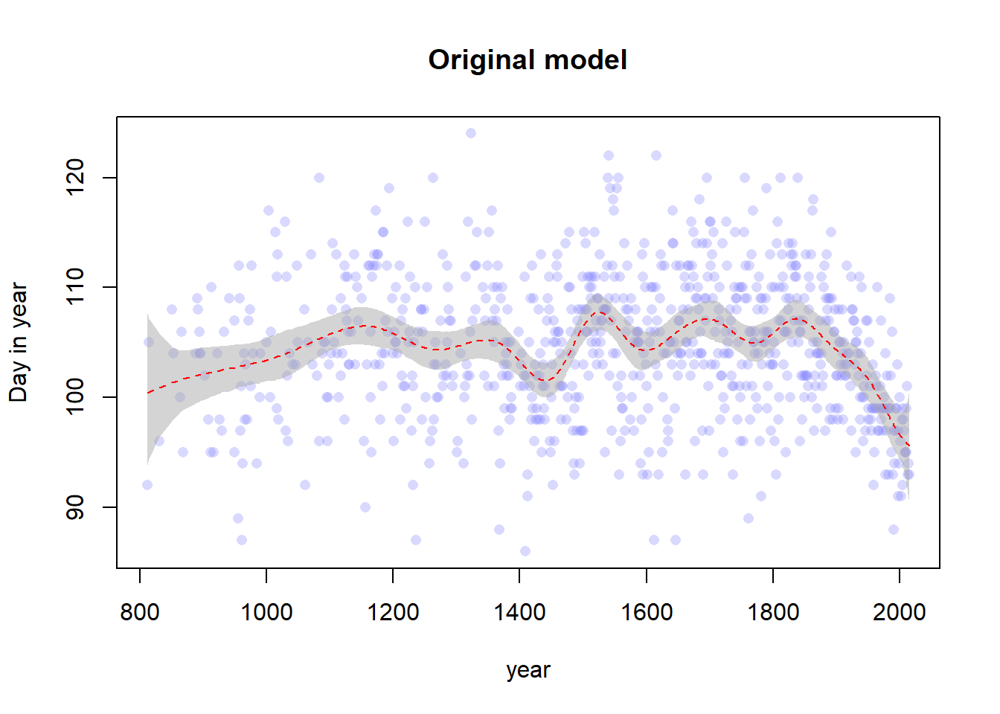
Now let’s fit an example with more knots, say 30. This is a dramatic increase but I really want to see the effect.
set.seed(100)# Create the splitsnk <-30knot_list <-quantile(d2$year, probs =seq(0, 1, length.out = nk))B <- splines::bs(x = d2$year,# I think we are recreating the default knots and could set# df = 13 instead, but nonetheless we persistknots = knot_list[-c(1, nk)],degree =3,intercept =TRUE )# Fit the modelm2 <-quap(flist =alist( D ~dnorm(mu, sigma), mu <- a + B %*% w, a ~dnorm(100, 10), w ~dnorm(0, 10), sigma ~dexp(1) ),data =list(D = d2$doy, B = B),start =list(w =rep(0, ncol(B))) )# Get the posterior predictions and plot themmu <-link(m2)mu_PI <-apply(mu, 2, PI, 0.97)plot(d2$year, d2$doy, col =col.alpha(rangi2, 0.3), pch =16,xlab ="year", ylab ="Day in year",main ="More knots")shade(mu_PI, d2$year, col =col.alpha("darkgray", 0.5))lines(d2$year, y =apply(mu, 2, mean), col ="red", lty =2)
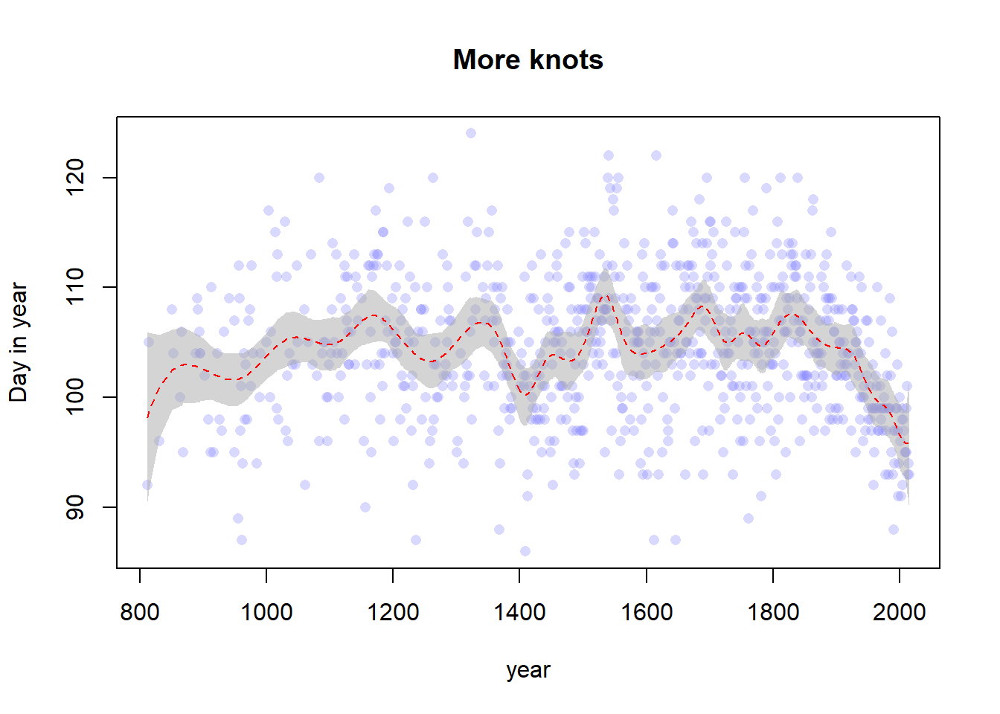
Now we’ll also increase the width of the prior for \(w\). Again, I’ll increase this dramatically to make the effect easier to see.
set.seed(100)# Create the splitsnk <-20knot_list <-quantile(d2$year, probs =seq(0, 1, length.out = nk))B <- splines::bs(x = d2$year,# I think we are recreating the default knots and could set# df = 13 instead, but nonetheless we persistknots = knot_list[-c(1, nk)],degree =3,intercept =TRUE )# Fit the modelm3 <-quap(flist =alist( D ~dnorm(mu, sigma), mu <- a + B %*% w, a ~dnorm(100, 10), w ~dnorm(0, 70), sigma ~dexp(1) ),data =list(D = d2$doy, B = B),start =list(w =rep(0, ncol(B))) )
Caution, model may not have converged.
Code 1: Maximum iterations reached.
# Get the posterior predictions and plot themmu <-link(m3)mu_PI <-apply(mu, 2, PI, 0.97)plot(d2$year, d2$doy, col =col.alpha(rangi2, 0.3), pch =16,xlab ="year", ylab ="Day in year",main ="More knots and wider prior")shade(mu_PI, d2$year, col =col.alpha("darkgray", 0.5))lines(d2$year, y =apply(mu, 2, mean), col ="red", lty =2)
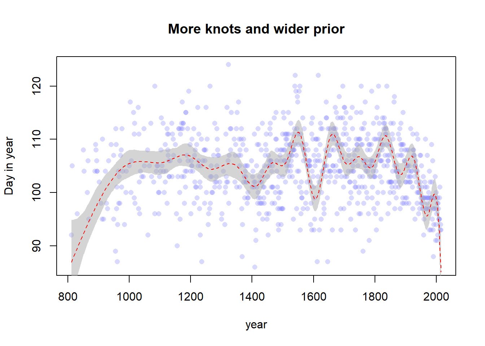
Hmm, it’s hard to see a difference. Let’s try plotting the three lines on top of each other.
layout(1)plot(x = d2$year, y = d2$doy,xlab ="year", ylab ="Day in year",xlim =range(d2$year), ylim =range(d2$doy),col =col.alpha(rangi2, 0.3), pch =16)lines(d2$year, y =apply(link(m1), 2, mean), col ="black")lines(d2$year, y =apply(link(m2), 2, mean), col ="blue")lines(d2$year, y =apply(link(m3), 2, mean), col ="red")legend(x ="top",c("original", "more knots", "more knots and wider prior"),col =c("black", "blue", "red"),lty =c(1, 1, 1))
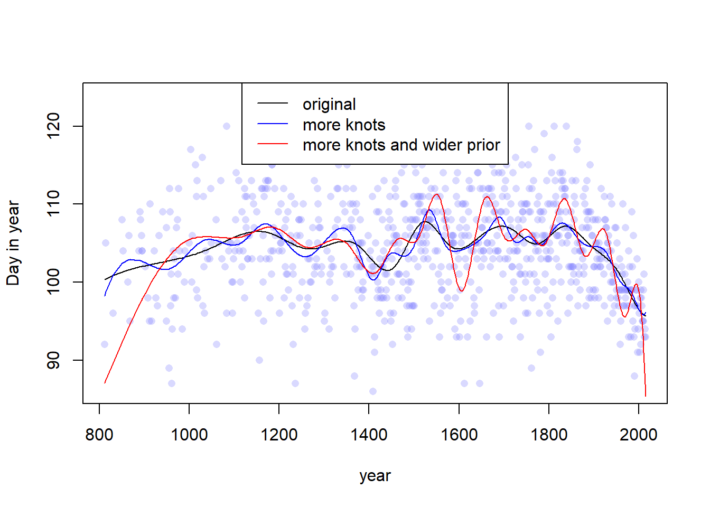
Yep, from this plot the difference is pretty easy to see. The number of knots and the prior for the weights controls the “wiggliness” (the smoothness or penalty) of the splines. More knots or a wider prior allows for more local variation in the spline curve, whereas constraining the number of knots (or shrinking the weights toward 0) constrains the spline, forcing it to vary less. I guess that the prior on the weights here is equivalent to increasing the penalty term of some other kind of spline, and a higher number of knots allows for a higher degree of interpolation as more inflection points are included.
4.2.14 4H1
We want to estimate the expected heights of the 5 individuals from the !Kung census with weights given in the text. Since we already saw that the predictions from our fitted model earlier were the same as the predictions in the book, I’ll use that model to do this. All we need to do is create a data frame with the heights of these individuals and pass it to link with the model.
# Create the data for the new individualsnew_indiv <- tibble::tribble(~individual, ~weight,1, 46.95,2, 43.72,3, 64.78,4, 32.59,5, 54.63 )# Get the samples from the posterior at the given weightspreds <- rethinking::link(fit = m_4m7, data = new_indiv)# Get the means and round itnew_indiv$means <-apply(preds, 2, function(x) round(mean(x), 2))# Calculate the PI and format itPIs <-apply(preds, 2, PI, 0.89)new_indiv$PIs <-apply(PIs, 2, function(x) paste0(round(x, 2), collapse =", "))# Format names and create the tablenames(new_indiv) <-c("Individial", "weight", "expected height", "89% interval")knitr::kable( new_indiv,caption =paste0("Expected heights with 89% equal-tailed posterior intervals"," for the five individuals wiuthout recorded heights in the"," !Kung census data, using link."))
Expected heights with 89% equal-tailed posterior intervals for the five individuals wiuthout recorded heights in the !Kung census data, using link.
Individial
weight
expected height
89% interval
1
46.95
156.35
155.88, 156.77
2
43.72
153.47
153.04, 153.92
3
64.78
172.21
170.85, 173.53
4
32.59
143.57
142.62, 144.51
5
54.63
163.18
162.4, 163.89
After talking to my colleague Juliana, I also decided to rerun this using sim() – with predicted heights that include variance from the mean. I think this is probably “more correct” so credit to Juliana for pointing that out to me.
new_indiv <- tibble::tribble(~individual, ~weight,1, 46.95,2, 43.72,3, 64.78,4, 32.59,5, 54.63 )# Get the samples from the posterior at the given weightspreds <- rethinking::sim(fit = m_4m7, data = new_indiv)# Get the means and round itnew_indiv$means <-apply(preds, 2, function(x) round(mean(x), 2))# Calculate the PI and format itPIs <-apply(preds, 2, PI, 0.89)new_indiv$PIs <-apply(PIs, 2, function(x) paste0(round(x, 2), collapse =", "))# Format names and create the tablenames(new_indiv) <-c("Individial", "weight", "expected height", "89% interval")knitr::kable( new_indiv,caption =paste0("Expected heights with 89% equal-tailed posterior intervals"," for the five individuals wiuthout recorded heights in the"," !Kung census data, using sim."))
Expected heights with 89% equal-tailed posterior intervals for the five individuals wiuthout recorded heights in the !Kung census data, using sim.
Individial
weight
expected height
89% interval
1
46.95
156.36
148.29, 164.14
2
43.72
153.79
145.86, 161.95
3
64.78
172.15
164.02, 181.17
4
32.59
143.91
135.7, 152.15
5
54.63
163.11
154.61, 171.11
So we can see that the results are not that different, but the 89% intervals are a bit wider, which is good. The new intervals incorporate an additional component of the variance that my previous estimates did not, so if I were publishing this model, I would definitely publish the sim intervals instead. I guess these are analogous to frequentist prediction intervals as opposed to confidence intervals.
4.2.15 4H2
Select out all the rows in the Howell1 data with ages below 18 years of age. Fit a linear regression to these data using quap. Present and interpret the estimates. For every 10 units of increase in weight, how much taller does the model predict a child gets?
Ok, first we’ll subset the data and make a quick plot.
d <- Howell1[Howell1$age <18, ]plot(d$weight, d$height, xlab ="weight", ylab ="height")
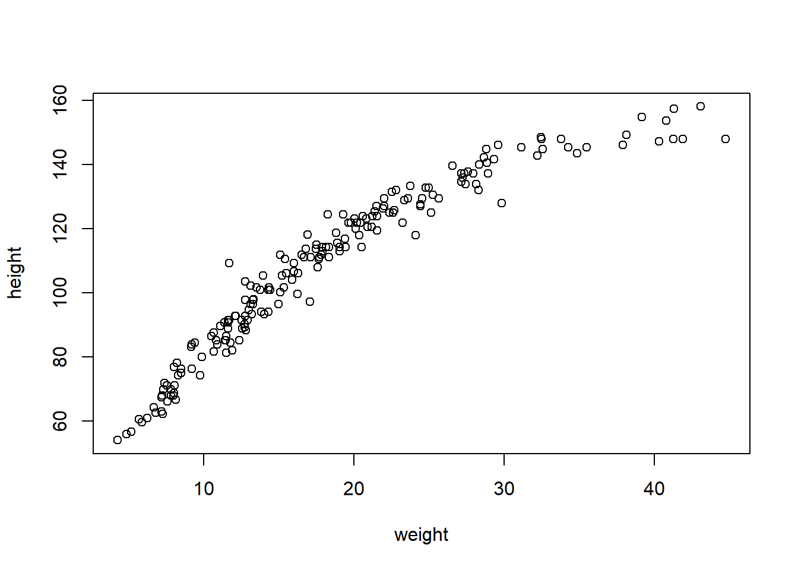
d_xbar <-mean(d$weight)
Now let’s fit the model. I’ll use the same priors as before, since I already looked at the data. We probably want to actually change the prior on the intercept since children have a lower mean height than adults, but I think it will work out alright.
m4h2 <-quap(flist =alist( height ~dnorm(mu, sigma), mu <- a + b * (weight - d_xbar), a ~dnorm(178, 20), b ~dlnorm(0, 1), sigma ~dunif(0, 50) ),data = d )precis(m4h2)
mean sd 5.5% 94.5%
a 108.383621 0.60867543 107.410840 109.356402
b 2.716654 0.06831783 2.607469 2.825839
sigma 8.437466 0.43060814 7.749271 9.125661
We can see that the estimate slope is \(\beta = 2.69\). So for every 10 units of increase in weight, our model predicts that a child’s height will increase by \(26.9\) units.
Next, we’ll plot the MAP prediction line with an 89% interval, along with the 89% prediction interval for heights.
plot(d$weight, d$height, xlab ="weight", ylab ="height")# Weight values to predict overweight_seq <-seq(from =min(d$weight), to =max(d$weight), by =0.5)# Get the posterior predictionsset.seed(100)link_4h2 <-link(m4h2, data =data.frame(weight = weight_seq))sim_4h2 <-sim(m4h2, data =data.frame(weight = weight_seq))# Summarize the samplesmu_mean <-apply(link_4h2, 2, mean)mu_CI <-apply(link_4h2, 2, PI, 0.89)mu_PI <-apply(sim_4h2, 2, PI, 0.89)# Plot the results -- we want to go backwards, starting with the wider# interval firstshade(mu_PI, weight_seq, col =col.alpha("black", 0.5))shade(mu_CI, weight_seq, col =col.alpha("lightgray", 0.75))lines(weight_seq, y = mu_mean, col ="red", lty =2)
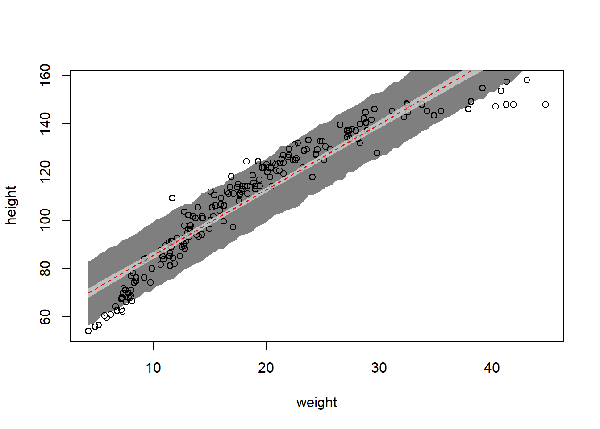
The observed height and weight of the children in the !Kung census data (circular points) with the MAP linear regression line (red dashed line), 89% equal-tailed posterior interval of this line (light gray shading), and 89% equal-tailed posterior interval for predicted heights ( dark gray shading).
The main issue with the model is that there is clearly some curvature to the trend in the data. There seems to be an inflection point around a weight of 30 where the trend is no longer linear, which will make the entire model fit worse (particularly because this region has high leverage). There is also some curvature in the lower weight values as well. Perhaps it would be better to fit this model with a spline or with a dummy variable for “age categories” that interacts with the slope term, allowing the model to “bend” at particular points – the same thing could be accomplished using splines with degree 1. Normally I hate discretization, but in this case these trends are likely to map to our approximate knowledge of human growth. Babies grow faster than toddlers, and teenagers grow faster than younger children. So perhaps including more information in our model could help solve this problem as well. But if we don’t want to include age, a spline could probably work better.
4.2.16 4H3
Based on our colleague’s suggestion, we want to use the natural logarithm of weight to model height. We’ll do that using the entire Howell1 dataset. I’ll use the same priors as before.
m4h3 <-quap(flist =alist( height ~dnorm(mu, sigma), mu <- a + b *log(weight), a ~dnorm(178, 20), b ~dlnorm(0, 1), sigma ~dunif(0, 50) ),data = Howell1 )precis(m4h3)
mean sd 5.5% 94.5%
a -22.874317 1.3342911 -25.006772 -20.741862
b 46.817789 0.3823240 46.206761 47.428816
sigma 5.137088 0.1558847 4.887954 5.386222
These estimates indicate that an individual from the census with mean weight is expected to have a height of \(138.27\) units. The slope (b) indicates that for every 1 unit increase in log-weight, height is expected to increase by about 47 units. I think that log-weight units are a bit difficult to think about, this would probably be easier to understand if we’d used log2 or something without an \(e\) in it. This coefficient means that if we multiply an individual’s weight by \(e\) (approximately 2.72), we would expect to see a 47 unit increase in their height. So, e.g., if we used log2, we could interpret this as doubling their weight, but we can’t do that now.
# Plot the raw dataplot(height ~ weight, data = Howell1, col =col.alpha(rangi2, 0.5))# Get the mean and height samples -- I couldn't get sim to work so I did link# and then did the sim part myselfweight_seq <-seq(from =min(Howell1$weight),to =max(Howell1$weight),by =1)set.seed(100)link_4h3 <-link(m4h3, data =data.frame(weight = weight_seq))sim_4h3 <-sim(m4h3, data =data.frame(weight = weight_seq))# Summarize the samplesmu <-apply(link_4h3, 2, mean)mu_CI <-apply(link_4h3, 2, PI, 0.97)mu_PI <-apply( sim_4h3, 2, PI, 0.97)# Add the predictions to the plotlines(weight_seq, y = mu_PI[1, ], lty =2)lines(weight_seq, y = mu_PI[2, ], lty =2)shade(mu_CI, weight_seq, col =col.alpha("darkgray", 0.75))lines(weight_seq, y = mu, col ="red", lty =2)
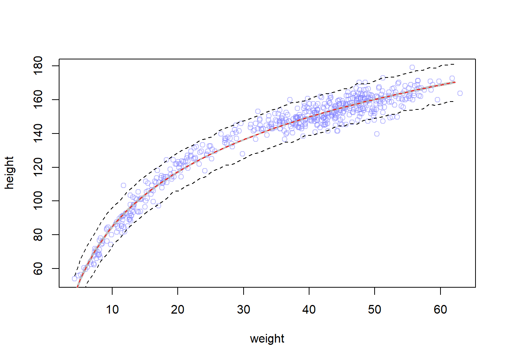
Well, it does look like our colleague’s suggestion produced a better model!
4.2.17 4H4
Plot the prior predictive distribution for the parabolic polynomial regression model in the chapter. We want to modify the prior distributions of the parameters so that the prior predictions lie within the reasonable outcome space we defined.
Well, when I looked at the original priors they were all already within the reasonable model space. But since we have a parabola now, we don’t need to constrain the linear part to be positive – we could get an always positive derivative even with a negative linear term (\(2ax + b > 0\) for \(ax^2 + bx + c\), so e.g. if \(a = 2, \ b = -2\) the derivative will be positive for all \(x > 1\), and all of our values are larger than 30). So I changed the priors to get trajectories that cover a bit more of the reasonable space. They approach the edges in some cases, but that’s okay. I wasn’t really sure what else to do with this question once I saw that the parabolas were all already in the reasonable space.
Maybe I was supposed to NOT standardize the data, even though the chapter did this and the book didn’t explicitly say what model to use. However, assigning a biologically meaningful prior without even centering the data is quite difficult, because in this example it makes sense to constrain the (non-centered) intercept at 0 (i.e. a person with weight zero has height zero).
However, we can quickly see how this model doesn’t make biological sense by thinking about where we should center the data. If we center at the mean, our parabola has to be either concave up or concave down (recall the second derivative of a parabola is constant), which doesn’t make any sense. Why would low weight people be taller, or high weight people be shorter? By centering the data at the mean we force the parabola to take one of these two options. So perhaps standardizing by some reference point would be good, but remember that we don’t want to look at the data to choose where to standardize. So we’re forced to make one of two biologically inaccurate assumptions: either the concavity must be unreasonable or the intercept must be unreasonable. So let’s set an unreasonable intercept and choose not to center the data. That way we can at least constrain the concavity to be positive.
There. Now our priors for the non-centered data fit inside the reasonable range. Are you happy now? They don’t really make any sense (why would a person with 0 weight have 90 height? why do we have to restrain the coefficient for the b terms so much?) but they fit inside the line. I think the better answer for this question is to either standardize the data or avoid using a quadratic model for this problem, which was maybe the entire point of the question.
4.2.18 4H5
Return to the cherry blossoms data and model the association between blossom date (doy) and March temperature (temp). Note that there are many missing values in both variables. You may consider a linear model, a polynomial, or a spline on temperature. How well does temperature trend predict the blossom trend?
I’m leaning towards splines for this question – I expect this relationship to be nonlinear, and given my frustration with polynomial models in the previous question, I think it’s okay to stick with a spline. So first we need to set up the splines. We haven’t talked about missing data at all yet in this book so I’ll just use the complete cases.
Let’s do a prior predictive simulation. I’ll start with the priors in the book for the previous model, but then adjust if they look unreasonable. I looked at the paper cited in the cherry blossoms data description, and it appears that the temperatures were measured in Kyoto. So I googled “Kyoto march temperature” and I guess we can assume that temperatures should be between 3 and 14 degrees celsius. McElreath says that the flowers can bloom any time from March to May, so as long as our predictions are between day 60 (first day of March in regular year) and day 152 (first day of May in leap year), I’ll consider that to be “reasonable”.
N <-1000set.seed(100)# Create a range of temperature for the PPS splinestemp_range <-seq(2, 14, 0.05)nk <-15# Create the splinesB <- splines::bs(x = temp_range,knots =quantile(temp_range, probs =seq(0, 1, length.out = nk))[-c(1, nk)],degree =3,intercept =TRUE )# Simulate a since it is easya <-rnorm(N, 100, 10)# Simulate the weights with a little trickeryw <-do.call(rbind, purrr::map(1:ncol(B), ~rnorm(N, 0, 15)))# Calculate the predicted meansmu <- a + B %*% w# Plot the ppslayout(1)plot(NULL,xlim =c(2, 14), ylim =c(40, 170),xlab ="temperature (Celsius)", ylab ="day of year",xaxs="i", yaxs="i")abline(h =60, lty =2, lwd =0.5)abline(h =152, lty =2, lwd =0.5)for (i in1:N) {lines(x = temp_range, y = mu[, i], col =col.alpha("black", 0.05))}
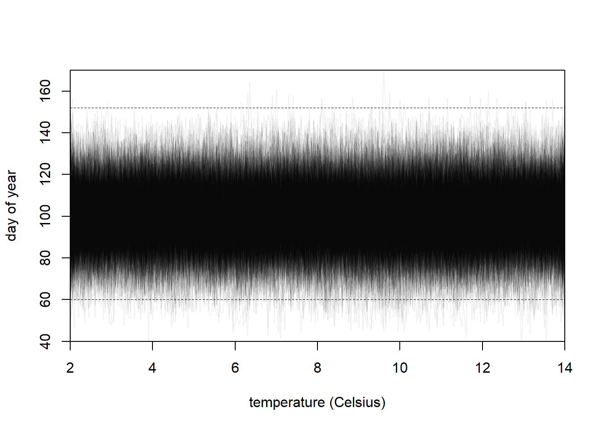
Yeah, the default priors look pretty good to me. The only change I made was to increase the width of the prior for \(w\), to potentially allow for more wiggliness. There is a bit of wiggling out of the expected day of year range, but it’s so rare that I think it will be fine, especially after the model sees the data. I think it will be harder to set the correct prior on \(w\) with a prior predictive simulation, so I think we better go ahead and fit the model.
Now let’s fit a quap model. Note that I had to turn up the maximum number of iterations run by the underlying optim call to ensure convergence criteria were met.
# Create the real splinesB_real <- splines::bs(x = d2$temp,knots =quantile(temp_range, probs =seq(0, 1, length.out = nk))[-c(1, nk)],degree =3,intercept =TRUE )# Fit the modelm4h6 <-quap(flist =alist( D ~dnorm(mu, sigma), mu <- a + B %*% w, a ~dnorm(100, 10), w ~dnorm(0, 15), sigma ~dexp(1) ),data =list(D = d2$doy, B = B_real),start =list(w =rep(0, ncol(B_real))),control =list(maxit =200) )rethinking::precis(m4h6, depth =2)
Alright, now we can get the actual predictions and plot them.
plot(d2$doy ~ d2$temp, xlab ="Temperature (Celsius)", ylab ="Day of year",col =col.alpha(rangi2, 0.4), pch =16)# Get the predictions and interval -- have to use the basis over the# interpolated temperature data!link_m4h6 <-link(m4h6, data =list(B = B))mu <-apply(link_m4h6, 2, mean)mu_pi1 <-apply(link_m4h6, 2, PI, 0.97)mu_pi2 <-apply(link_m4h6, 2, PI, 0.89)mu_pi3 <-apply(link_m4h6, 2, PI, 0.61)# lines(temp_range, mu_pi3[1, ], lty = 2)# lines(temp_range, mu_pi3[2, ], lty = 2)# lines(temp_range, mu_pi2[1, ], lty = 2)# lines(temp_range, mu_pi2[2, ], lty = 2)# lines(temp_range, mu_pi1[1, ], lty = 2)# lines(temp_range, mu_pi1[2, ], lty = 2)shade(mu_pi1, temp_range, col =col.alpha("black", 0.5))shade(mu_pi2, temp_range, col =col.alpha("darkgray", 0.5))shade(mu_pi3, temp_range, col =col.alpha("gray", 0.5))lines(temp_range, mu, lty =2, col ="red")
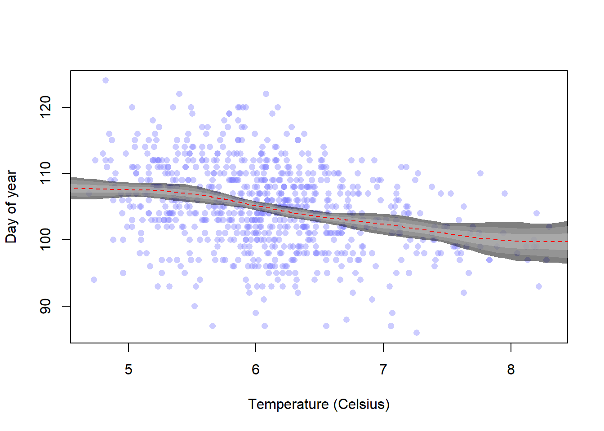
OK, so I had some confusion here with plotting the predictions. I forgot that I need to specify a separate \(B\) matrix of basis functions for the model fitting and for this part of the predictions. But now it is working and we can see that there is definitely a decent association between warmer temperatures and earlier blooming. However, we would need more high-temperature data to confirm this trend (and high-temperature data is something we wish we didn’t have more of, really).
4.2.19 4H6
Q. Simulate the prior predictive distirbution for the cherry blossom spline in the chapter. Adjust the prior on the weights and observe what happens. What do you think the prior on the weights is doing?
Ok, first we need to simulate the PPD. I’m pretty sure I already have a handle on this from the previous two spline exercises, but it should be fun. (In fact, we really already did this exact exercise, but whatever I guess.)
Let’s simulate with maybe six different widths: 1, 5, 10 (chosen in the textbook), 15, 20, and 50. I’ll get the predictions from each of these simulations and then plot them.
# Get ready for simulation.# Set parameters for simwidths <-c(1, 5, 10, 15, 20, 50)N <-250set.seed(100)layout(matrix(c(1, 2, 3, 4, 5, 6), ncol =3, nrow =2))# Create the splitsnk <-15year_range <-seq(800, 2010, 1)knot_list <-quantile(year_range, probs =seq(0, 1, length.out = nk))B <- splines::bs(x = year_range,# I think we are recreating the default knots and could set# df = 13 instead, but nonetheless we persistknots = knot_list[-c(1, nk)],degree =3,intercept =TRUE )sim_res <-vector(mode ="list", length =length(widths))do_pps <-function(width) {# Simulate a since it is easy a <-rnorm(N, 100, 10)# Simulate the weights with a little trickery w <-do.call(rbind, purrr::map(1:ncol(B), ~rnorm(N, 0, width)))# Calculate the predicted means mu <- a + B %*% wplot(NULL,xlim =c(800, 2010), ylim =c(40, 170),xlab ="year", ylab ="day of year",xaxs="i", yaxs="i",main =paste("Width:", width) )for (i in1:N) {lines(x = year_range, y = mu[, i], col =col.alpha("black", 0.01)) }abline(h =60, lty =2, lwd =0.5)abline(h =152, lty =2, lwd =0.5)return(NULL)}out <-sapply(widths, do_pps)
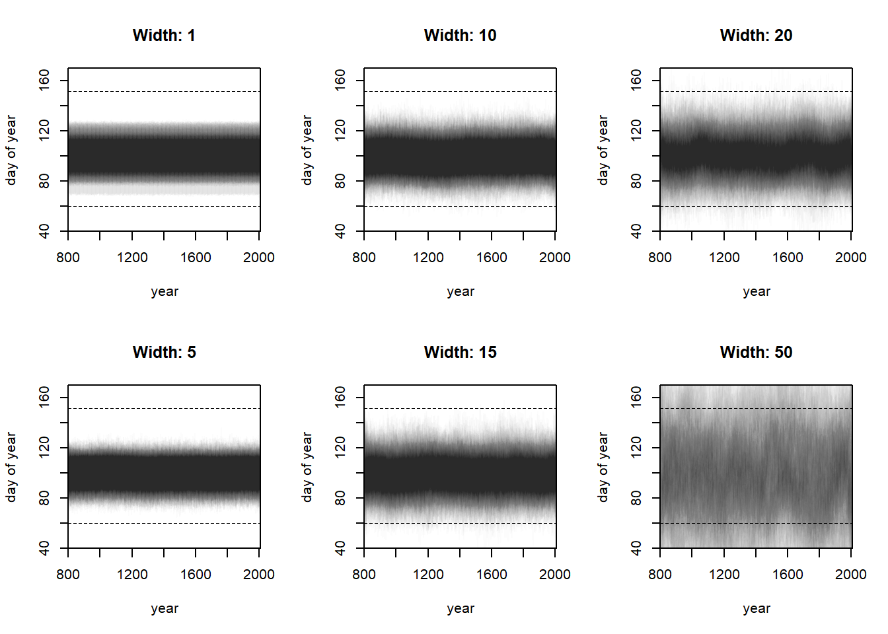
Yep, just like I said in the other two exercises about this, the width of the spline prior determines the amount of smoothness that the spline should have. If we increase the width, the spline is encouraged to vary more, and will “wiggle” (spike up and down) with larger fluctuations. If we constrain this parameter, the spline is encouraged to vary less, staying closer to the intercept.
4.2.20 4H8
Q. The cherry blossom split in the chapter used an intercept \(\alpha\), but technically it doesn’t require one. The first basis functions could substitute for the intercept. Try refitting the cherry blossom spline without the intercept. What else about the model do you need to change to make this work.
This question is worded a bit confusingly to me. I assume he means the intercept parameter in the model, because the basis splines have a separate intercept that we also set to be true. Either way, let’s go ahead and try refitting a model without the intercept.
# Data importdata("cherry_blossoms")d <- cherry_blossomsd2 <- d[complete.cases(d$doy), ]set.seed(100)# Create the splitsnk <-15knot_list <-quantile(d2$year, probs =seq(0, 1, length.out = nk))B <- splines::bs(x = d2$year,# I think we are recreating the default knots and could set# df = 13 instead, but nonetheless we persistknots = knot_list[-c(1, nk)],degree =3,intercept =TRUE )# Fit the modelm <-quap(flist =alist( D ~dnorm(mu, sigma), mu <- B %*% w, w ~dnorm(0, 10), sigma ~dexp(1) ),data =list(D = d2$doy, B = B),start =list(w =rep(0, ncol(B))) )# Get the posterior predictions and plot themmu <-link(m)mu_PI <-apply(mu, 2, PI, 0.97)layout(1)plot(d2$year, d2$doy, col =col.alpha(rangi2, 0.3), pch =16,xlab ="year", ylab ="Day in year")shade(mu_PI, d2$year, col =col.alpha("darkgray", 0.5))lines(d2$year, y =apply(mu, 2, mean), col ="red", lty =2)
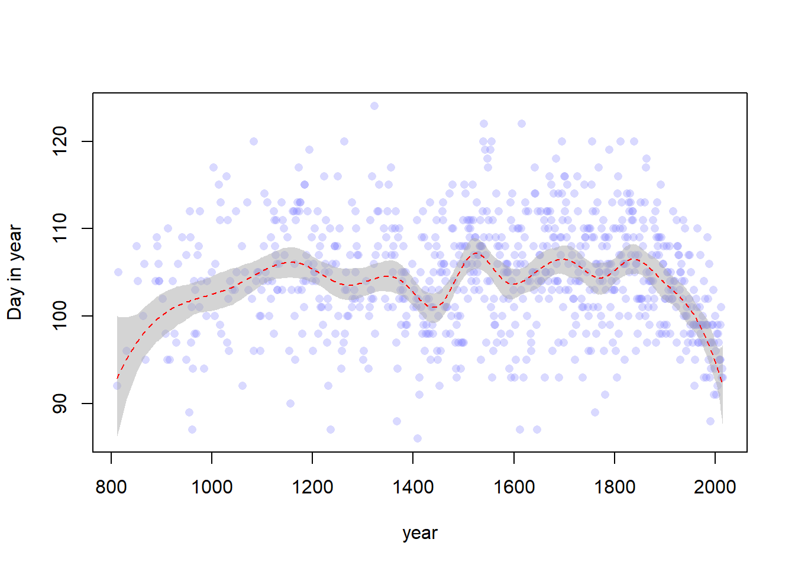
Well, I’ll be honest. I’m not really sure what else we’re supposed to change here because that model looks perfectly fine to me. It has some curvature at the lowest year values though, which we maybe should have expected since we basically set the intercept to zero. I think we could improve this by adjusting the prior for \(w\) to have a mean that was the same mean as the previous intercept prior (that is, 100). Maybe that’s the other thing we need to change. Let’s try it.
# Save the previous results or whateverold_mu <- muold_mu_PI <- mu_PI# Fit the modelm <-quap(flist =alist( D ~dnorm(mu, sigma), mu <- B %*% w, w ~dnorm(100, 10), sigma ~dexp(1) ),data =list(D = d2$doy, B = B),start =list(w =rep(0, ncol(B))) )# Model with interceptma <-quap(flist =alist( D ~dnorm(mu, sigma), mu <- a + B %*% w, a ~dnorm(100, 10), w ~dnorm(0, 10), sigma ~dexp(1) ),data =list(D = d2$doy, B = B),start =list(w =rep(0, ncol(B))) )a_mu <-link(m)a_mu_PI <-apply(mu, 2, PI, 0.97)# Get the posterior predictions and plot themmu <-link(m)mu_PI <-apply(mu, 2, PI, 0.97)# Plot the results with both linesplot(d2$year, d2$doy, col =col.alpha(rangi2, 0.3), pch =16,xlab ="year", ylab ="Day in year")lines(d2$year, y =apply(a_mu, 2, mean), col ="green", lty =2)lines(d2$year, y =apply(old_mu, 2, mean), col ="blue", lty =2)lines(d2$year, y =apply(mu, 2, mean), col ="red", lty =2)legend(x ="top",legend =c("intercept", "no intercept mean 0", "no intercept mean 100"),lty =c(2, 2, 2),col =c("green", "blue", "red"))
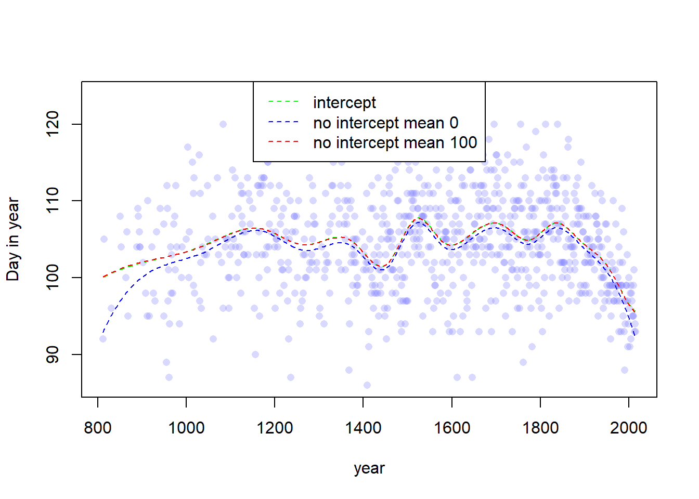
Yes indeed, if you look closely, you can see that the red line and the green line are almost exactly the same. Which means that if we adjust the mean of the spline prior, we can fit the exact same model without an intercept. Yay.